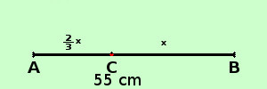

|
apprendimento Risolvere il seguente problema Un segmento di 55 cm e' diviso in due parti tali che l'una sia i 2/3 dell'altra ; determinare la lunghezza dei due segmenti a destra la figura posso chiamare la lunghezza di un segmento x e l'altra 2/3 x per la relazione risolvente so che la loro somma e' un 55 cm  quindi scrivoipotesi: la somma delle lunghezze dei segmenti e' 55 cm tesi: trovarne le lunghezze lunghezza del secondo segmento = x
minimo comune multiplo
per il secondo principio elimino i denominatori 3x + 2x = 165 sommo i termini simili 5x = 165 applico il secondo principio per trovare la x
x = 33 lunghezza secondo segmento = x = 33 cm lunghezza del primo segmento = 2/3 x = 2/3 ·33 = 22 cm Controlla che, grosso modo, le dimensioni relative nella figura corrispondano al risultato (cioe' il primo segmento e' un po' piu' corto del secondo) |